웬델
새 맛을 적는 오후
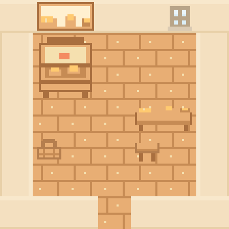
작은 빵 모양 연구 자리와 문 닫은 뒤 쉬는 자리. 가게의 생산 화덕은 들이지 않는다.
함께하기: 찬 반죽 모양 고르기, 만든 간식 함께 맛보기.자기 시간: 일을 마친 뒤 모양을 그리다가 메모를 덮고 쉬기.
13명 각각의 취향과 쉬는 방식. 방 안 5×5칸, 중앙 통로 유지. 유저 작업실 뒤쪽에 연결 완료. 1단계 증축 후 출입하며 결혼하면 해당 배우자의 취향 가구가 배치됩니다.
새 맛을 적는 오후

작은 빵 모양 연구 자리와 문 닫은 뒤 쉬는 자리. 가게의 생산 화덕은 들이지 않는다.
함께하기: 찬 반죽 모양 고르기, 만든 간식 함께 맛보기.자기 시간: 일을 마친 뒤 모양을 그리다가 메모를 덮고 쉬기.
바람 소리와 느긋한 놀이
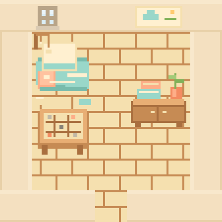
친구와 농담하고 조개 소리를 좋아하는 코스모의 편한 생활방. 큰 바닥 방석, 조개 모빌, 작은 돌말놀이판으로 구성한다.
함께하기: 돌말놀이를 하며 농담하기, 구름이 무슨 모양인지 각자 말하기.자기 시간: 바닥 방석에 기대 조개 소리를 듣고, 짧은 낙서를 남기거나 조용히 쉬기.
내 속도로 읽는 방
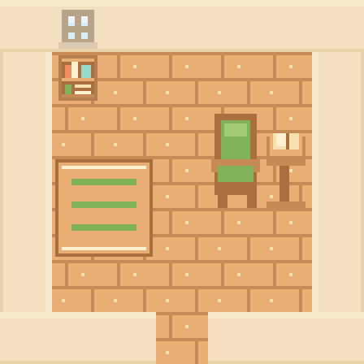
낮은 읽기 받침과 직접 깎은 책받침, 쉬운 동선. 미완성 손일도 편히 놓는 공간.
함께하기: 같은 책을 각자 속도로 읽기, 생활 물건의 모양 이야기.자기 시간: 몇 줄 읽고 책갈피를 놓은 뒤 나무 조각 손질.
구름과 별의 작은 서재
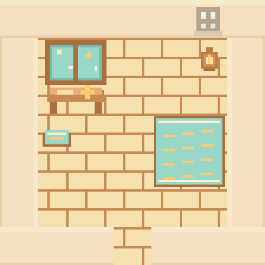
하늘 보이는 창가, 접은 종이와 별 그림. 밤의 작은 등불로 차분한 분위기.
함께하기: 오늘 구름 모양 말하기, 접은 종이 모양 함께 고르기.자기 시간: 창밖 구름 보기, 짧은 창작 메모 접기, 밤에는 조용히 등불 켜기.
돌보는 사람의 휴식방
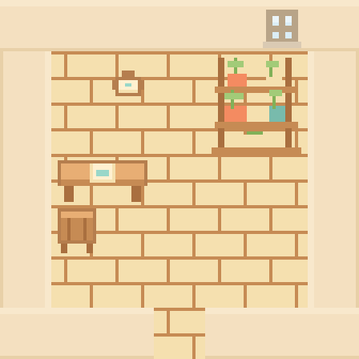
소수의 허브 화분과 자기 찻잔, 그늘빛 천. 약방 업무를 들여오는 대신 쉰다.
함께하기: 함께 화분 돌보기, 원하는 휴식부터 물어보기.자기 시간: 자기 화분을 잠깐 보고 차를 마신 뒤 창밖 풍경 보기.
소풍을 기다리는 햇살방
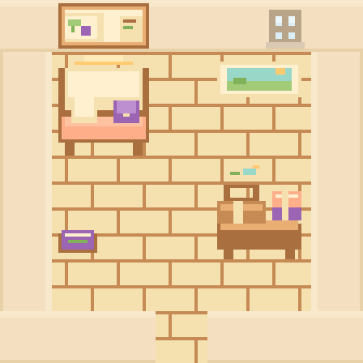
책임감과 계획하는 성격을 자기 여가에 쓰는 방. 볕 드는 휴식 벤치와 소풍 바구니, 접어 둔 계절 천을 놓는다.
함께하기: 짧은 소풍 장소 고르기, 담요 색 정하기, 각자 좋아하는 풍경 이야기.자기 시간: 쉬는 날 가고 싶은 곳을 고르고, 바구니를 준비한 뒤 밝은 벤치에서 아무 일 없이 쉬기.
두 색이 남는 손일방
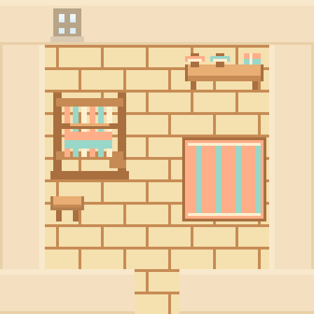
두 색 실을 나란히 놓고 완성작과 작업 중인 천을 함께 둔다. 미완성을 숨기지 않는 방.
함께하기: 정답 없이 서로 좋아하는 무늬를 말하기.자기 시간: 두 색 비교 후 한 조각만 마무리하고 쉬기.
튼튼하고 예쁜 등불방
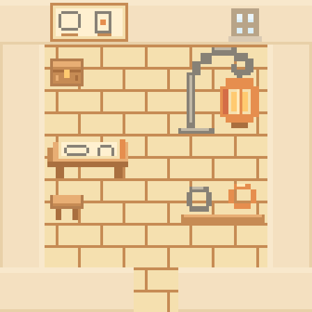
차가운 금속 장식 진열과 도안판, 작은 등불. 뜨거운 대장간은 작업장에 남긴다.
함께하기: 등불 그림자의 모양 보기, 안전한 장식 선택.자기 시간: 도안을 고르고 차가운 완성 고리를 등불에 대 보기.
공책을 펴는 햇빛방
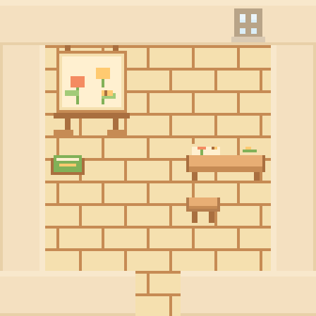
관찰 공책과 생활 그림을 펼치는 햇빛 자리. 사람들 앞에서 발표할 의무가 없는 개인방.
함께하기: 원할 때만 관찰 이야기를 듣고 그림의 작은 차이 찾기.자기 시간: 창가 관찰 뒤 짧게 그리고 공책 덮기.
손님이 아닌 나의 차자리
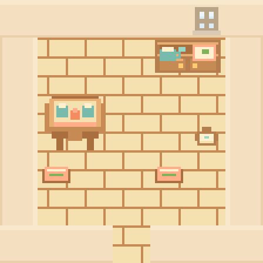
자기가 고른 찻잔·차받침과 쉬는 의자. 가게 접객용 자리와 다른 사적인 차방.
함께하기: 오늘은 누구 취향의 차를 마실지 번갈아 고르기.자기 시간: 찻집 마감 후 자기 잔에 차를 따르고 쉬기.
돌아올 자리가 있는 방
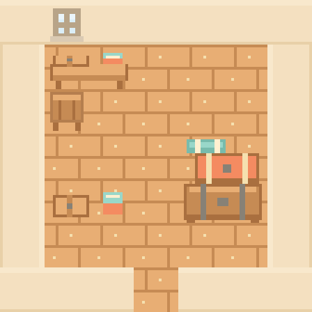
여행 짐 선반·귀가 일정·편지 상자. 물건을 팔지 않는 개인 기념품 공간.
함께하기: 기념품 가격 대신 있었던 일 이야기.자기 시간: 귀가해 짐을 내려놓고 편지 정리, 다음 여행 전에 일정 확인.
차가 식을 때까지 쉬는 오후
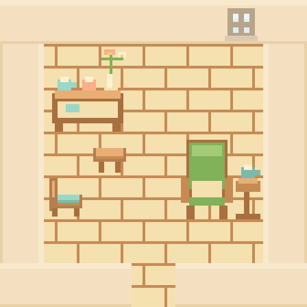
오후 차와 오래 이어지는 대화를 좋아하는 사람의 정돈한 휴식방. 큰 안락의자, 작은 차상, 개인 컵과 꽃 진열을 둔다.
함께하기: 차 한 잔과 긴 대화, 그날 마음에 드는 잔과 꽃 고르기.자기 시간: 오후에 자기 잔을 골라 차를 마시고 의자에 깊이 기대 쉬기.
조용한 길을 닮은 독서방
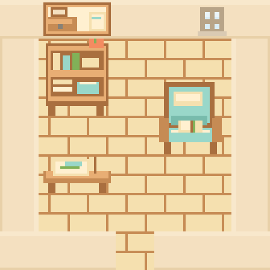
조용한 길과 쉬는 시간을 좋아하는 성격에서 독서·풍경 스케치 취향을 추측한 개인방. 책이 놓인 깊은 의자와 작은 그림 자리, 화분을 둔다.
함께하기: 같은 방에서 각자 읽기, 다음에 걷고 싶은 조용한 길 이야기.자기 시간: 편한 의자에서 조금 읽고 책갈피를 넣거나 산책에서 본 풍경을 짧게 그리기.